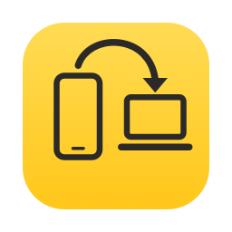

PhoneDrop
AirDrop-style file transfer from Android to Mac. Fast, private, no cables.
All releases · Source code · Privacy
Why PhoneDrop
- Any file, any size. Photos, videos, documents, archives: transfers use parallel connections at full Wi-Fi speed. If the connection drops, they resume where they left off, and they keep running with the screen off.
- Private. Files go straight from your phone to your Mac over your own network. Everything is encrypted with AES-256-GCM. No accounts, no cloud, no tracking.
- Both ways. Share from any Android app, or add files to PhoneDrop on your Mac and press Send: your phone downloads them by itself.
- No router needed. With no shared network, the phone finds the Mac over Bluetooth and connects to it directly.
Set up in a minute
- Open PhoneDrop.dmg and drag PhoneDrop to Applications.
- The first time you open it, macOS may say it can't verify the app. Go to System Settings › Privacy & Security and click Open Anyway. When asked, allow incoming connections.
- Install PhoneDrop.apk on your phone. Your browser will ask you to allow installing apps from this source.
- On the phone, tap Pair with Mac › Scan code, then scan the QR code in the PhoneDrop menu on your Mac's menu bar.
Your phone and Mac need to be on the same Wi-Fi network. Tip for Xiaomi and similar phones: set PhoneDrop's battery usage to "No restrictions" so transfers keep running with the screen off.
Türkçe
PhoneDrop; fotoğraf, video, belge, kısacası her tür dosyayı Android telefonundan Mac'ine Wi-Fi üzerinden hızlı ve şifreli olarak gönderir. Bağlantı koparsa kaldığı yerden devam eder, ekran kapalıyken de çalışır. Kurulum için yukarıdaki iki dosyayı indir. Mac'te ilk açılışta Sistem Ayarları › Gizlilik ve Güvenlik › Yine de Aç demen gerekebilir. Ardından telefonda Mac ile eşleştir › Kodu okut'a dokunup Mac'teki QR kodu okut.